Ф01 Внутренний угол и складка основного ковра
Карточки: У01. Источник: И, печатные страницы 81, 82; PDF 83, 84.
Ракурсы. Общий косой вид сверху на две внутренние стенки и кровлю; далее крупные боковые виды вершины.
Внешний вид деталей. Нижний подъем одного полотна идет вдоль обеих стенок. В вершине виден избыток, сложенный в выступающую складку; после укладки складка прижата к одной стенке. Тарельчатые крепления лежат на горизонтали рядом с обеими стенами. В обзорном фото готового узла видна отдельная округлая внутренняя накладка; это следующий уровень усиления, а не доказательство наличия накладки уже в операции со складкой.
Изменение по этапам. Руки формируют сгиб; фен вводится внутрь складки; затем ролик прижимает складку к стороне. Фото помогают различить сварку внутри складки и ее последующее закрепление снаружи.
Пределы наблюдения. На фото нет размеренной развертки складки; мелкие контакты под тарелками не видны. Обзорное фото и промежуточные фото показывают разные стадии.
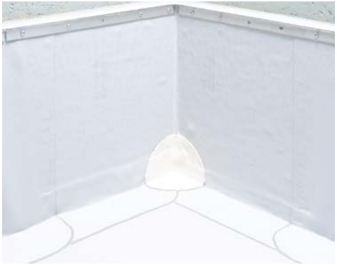
И, с. 81 / PDF 83, вид 1
Исходный растр 379×300 px
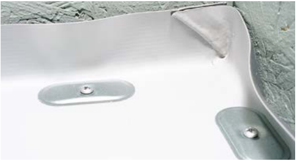
И, с. 81 / PDF 83, вид 2
Исходный растр 377×206 px
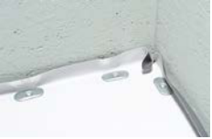
И, с. 81 / PDF 83, вид 3
Исходный растр 181×119 px
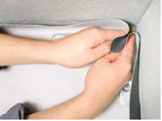
И, с. 82 / PDF 84, вид 1
Исходный растр 181×134 px
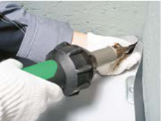
И, с. 82 / PDF 84, вид 2
Исходный растр 181×135 px
И, с. 82 / PDF 84, вид 3
Исходный растр 181×135 px
К началу
Ф02 Приклейка заготовки между разными высотами парапета
Карточки: У02. Источник: И, печатные страницы 82, 83, 84; PDF 84, 85, 86.
Ракурсы. Косой вид сверху и со стороны кровли; две стенки разной высоты видны одновременно.
Внешний вид деталей. Полотно имеет вертикальные части и отогнутые нижние выпуски. У второй стенки видна верхняя горизонтальная полка низкого парапета. В процессе первая половина уже плотно лежит на стенке, а вторая еще свободно отогнута. Клей под мембраной после прижатия скрыт.
Изменение по этапам. Валик наносит клей на стенку и тыльную часть полотна; узкий ролик обжимает ребро, широкий — плоскость. После разреза свободная часть переносится на вторую стенку.
Пределы наблюдения. Граница клея не является сварным швом. Подкладной кусок от загрязнения — временная защита. Фото не задает, как окончательно герметизировать каждый разрез.
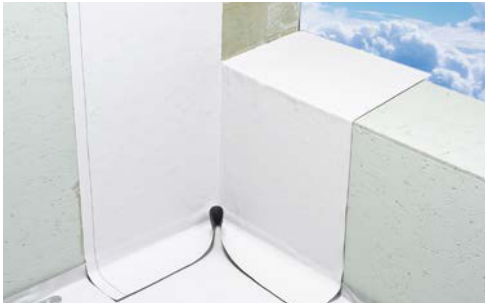
И, с. 82 / PDF 84, вид 4
Исходный растр 379×237 px
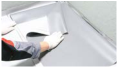
И, с. 83 / PDF 85, вид 1
Исходный растр 183×105 px
И, с. 83 / PDF 85, вид 2
Исходный растр 181×135 px
И, с. 83 / PDF 85, вид 3
Исходный растр 183×103 px
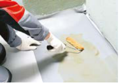
И, с. 83 / PDF 85, вид 4
Исходный растр 181×127 px
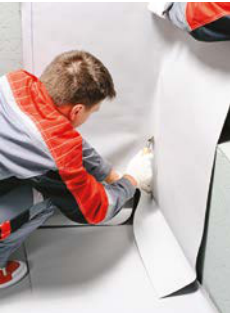
И, с. 83 / PDF 85, вид 5
Исходный растр 181×245 px
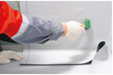
И, с. 84 / PDF 86, вид 1
Исходный растр 181×120 px
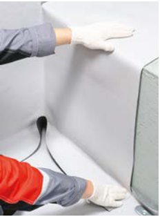
И, с. 84 / PDF 86, вид 2
Исходный растр 181×244 px
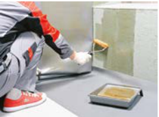
И, с. 84 / PDF 86, вид 3
Исходный растр 181×133 px
И, с. 84 / PDF 86, вид 4
Исходный растр 181×131 px
К началу
Ф03 Готовый внутренний угол с округлым переходом
Карточки: У03. Источник: И, печатные страницы 85, 86; PDF 87, 88.
Ракурсы. Общий косой вид сверху на тройную вершину и крупные виды изнутри угла.
Внешний вид деталей. Белая объемная деталь имеет горизонтальную округлую лопасть и части, заходящие на обе стенки. Переходы между гранями закруглены; внешний периметр детали заметен поверх более плоских полотнищ. Ее нельзя понимать как наклеенный плоский треугольник.
Изменение по этапам. Сначала удерживается центр, узкий латунный ролик идет по малому радиусу, затем широкая площадь и край прижимаются к соответствующим поверхностям.
Пределы наблюдения. Толщина названа увеличенной, но не размерена. Тень и блик не дают числового радиуса. Требование полной сварки следует из текста, не только из вида.
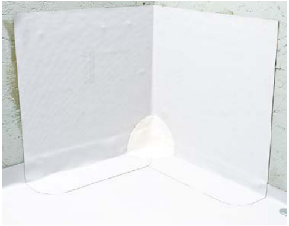
И, с. 85 / PDF 87, вид 1
Исходный растр 379×296 px
И, с. 85 / PDF 87, вид 2
Исходный растр 182×159 px
И, с. 85 / PDF 87, вид 3
Исходный растр 183×158 px
И, с. 86 / PDF 88, вид 1
Исходный растр 181×127 px
И, с. 86 / PDF 88, вид 2
Исходный растр 183×140 px
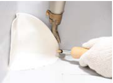
И, с. 86 / PDF 88, вид 3
Исходный растр 181×132 px
К началу
Ф04 Сдвинутый конверт внутреннего угла
Карточки: У04. Источник: И, печатные страницы 86, 87, 88, 89; PDF 88, 89, 90, 91.
Ракурсы. Последовательные крупные косые виды сверху; взгляд направлен в вершину и вдоль линий нахлеста.
Внешний вид деталей. Первоначально мембрана образует свободную петлю. После попеременной укладки на две стороны видны диагональные линии сгиба. Готовый конверт лежит на кровле со смещением в одну сторону и имеет перекрывающиеся сегменты. На позднем фото пунктиром обозначены части 1 и 2 — это разметка операций, не материал и не отверстия.
Изменение по этапам. Петля переходит с одной стороны на другую, затем сдвигается относительно старого сгиба. Видна временно подложенная металлическая пластинка. Носик узкого ролика проходит по границам утолщений и переходу в обычный нахлест.
Пределы наблюдения. По фото не определить размер смещения и число слоев в каждой точке без развертки; восстановление размеров по пропорциям запрещено. Правильный конверт не требует усиления по тексту И с.86 (PDF88).
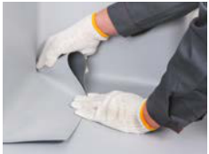
И, с. 86 / PDF 88, вид 4
Исходный растр 182×134 px
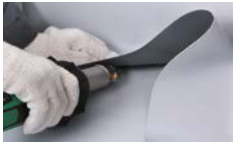
И, с. 86 / PDF 88, вид 5
Исходный растр 182×110 px
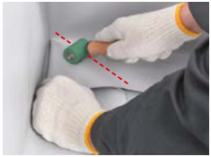
И, с. 87 / PDF 89, вид 1
Исходный растр 182×136 px
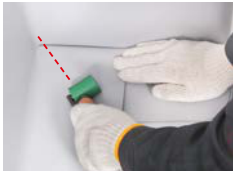
И, с. 87 / PDF 89, вид 2
Исходный растр 182×135 px
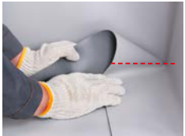
И, с. 87 / PDF 89, вид 3
Исходный растр 182×134 px
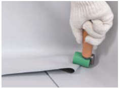
И, с. 87 / PDF 89, вид 4
Исходный растр 183×135 px
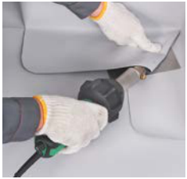
И, с. 87 / PDF 89, вид 5
Исходный растр 183×175 px
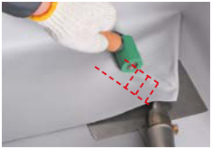
И, с. 88 / PDF 90, вид 1
Исходный растр 182×128 px
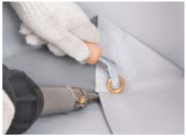
И, с. 88 / PDF 90, вид 2
Исходный растр 183×135 px
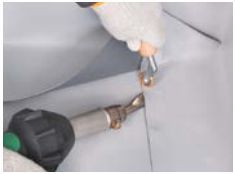
И, с. 88 / PDF 90, вид 3
Исходный растр 182×135 px
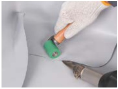
И, с. 88 / PDF 90, вид 4
Исходный растр 182×137 px
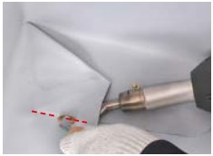
И, с. 88 / PDF 90, вид 5
Исходный растр 182×135 px
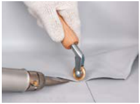
И, с. 89 / PDF 91, вид 1
Исходный растр 183×135 px
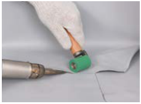
И, с. 89 / PDF 91, вид 2
Исходный растр 182×135 px
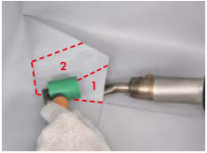
И, с. 89 / PDF 91, вид 3
Исходный растр 182×134 px
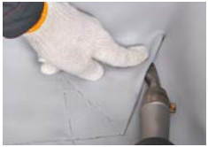
И, с. 89 / PDF 91, вид 4
Исходный растр 183×129 px
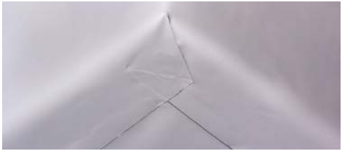
И, с. 89 / PDF 91, вид 5
Исходный растр 379×167 px
К началу
Ф05 Ручное изготовление накладного внутреннего угла
Карточки: У05. Источник: Р, печатные страницы 156, 157; PDF 158, 159.
Ракурсы. Вид сверху на квадрат, затем косые виды сложенной заготовки на ребре стола и установленного угла.
Внешний вид деталей. Плоский квадрат превращается в пространственную деталь с отдельным нахлестом. Внутренняя полоса раскроя прячется в кармане. Во время сварки на ребре стола видны обе сходящиеся грани. Установленная накладка перекрывает тройную вершину; собственный стык расположен на вертикальном участке.
Изменение по этапам. Сгибы сначала служат разметкой центра, затем загиб угла и вырезание полосы формируют замыкание. Сварку собственного стыка выполняют до установки в кровельный угол.
Пределы наблюдения. Размер квадрата 20×20 см и полосы 20 мм даны текстом; размер готовых граней и радиусы не следует снимать с фото.
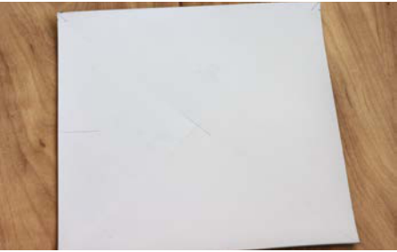
Р, с. 156 / PDF 158, вид 1
Исходный растр 347×220 px
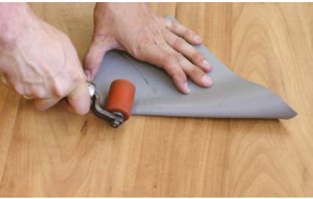
Р, с. 156 / PDF 158, вид 2
Исходный растр 349×221 px
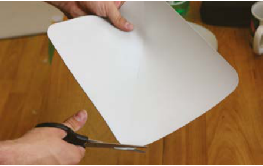
Р, с. 156 / PDF 158, вид 3
Исходный растр 347×220 px
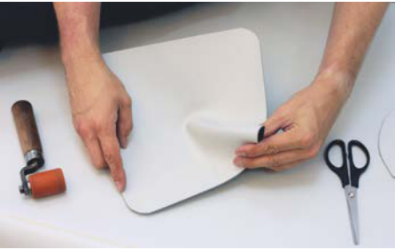
Р, с. 156 / PDF 158, вид 4
Исходный растр 347×220 px
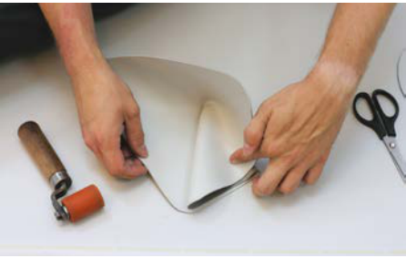
Р, с. 156 / PDF 158, вид 5
Исходный растр 347×220 px
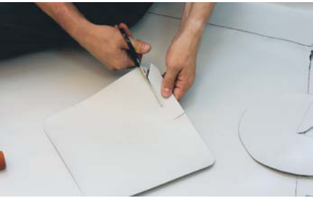
Р, с. 156 / PDF 158, вид 6
Исходный растр 347×220 px
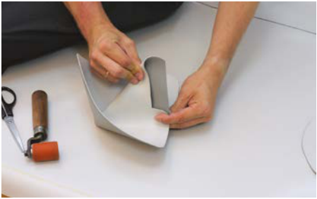
Р, с. 157 / PDF 159, вид 1
Исходный растр 349×219 px
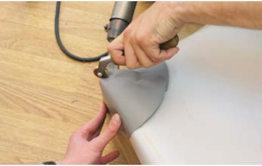
Р, с. 157 / PDF 159, вид 2
Исходный растр 347×220 px
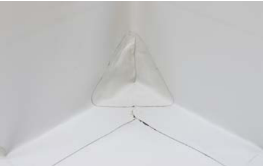
Р, с. 157 / PDF 159, вид 3
Исходный растр 347×220 px
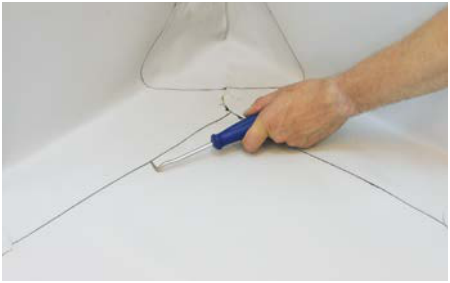
Р, с. 157 / PDF 159, вид 4
Исходный растр 350×220 px
К началу
Ф06 Рондель и раскрой основного ковра у наружного угла
Карточки: У06. Источник: И, печатные страницы 90, 91; PDF 92, 93.
Ракурсы. Общий косой вид на выпуклый угол, затем крупные виды сверху на основание угла.
Внешний вид деталей. Две вертикальные грани выступают в плоскость кровли. Желтым условно выделен небольшой круглый рондель в основании вершины. Основное полотно разведено по сторонам, тарельчатые крепления стоят вдоль примыкания. После подрезки остаются невысокие вертикальные бортики.
Изменение по этапам. Нож задает точку начала и диагональный разрез к краю. Полотно разводится и затем обрезается по нужному подъему.
Пределы наблюдения. Желтый цвет выделяет неармированную деталь учебного образца. Диаметр ронделя не указан; это не размеренная заплатка Ø120 мм для Т-стыка.
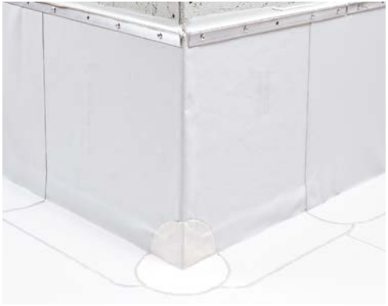
И, с. 90 / PDF 92, вид 1
Исходный растр 379×300 px
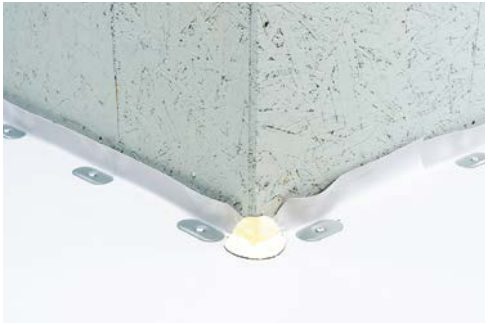
И, с. 90 / PDF 92, вид 2
Исходный растр 379×253 px
И, с. 91 / PDF 93, вид 1
Исходный растр 183×136 px
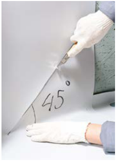
И, с. 91 / PDF 93, вид 2
Исходный растр 183×253 px
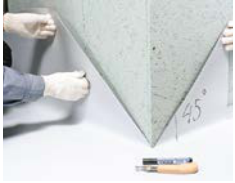
И, с. 91 / PDF 93, вид 3
Исходный растр 183×142 px
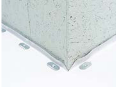
И, с. 91 / PDF 93, вид 4
Исходный растр 183×137 px
К началу
Ф07 Объемное усиление наружного угла из V-SR
Карточки: У07. Источник: И, печатные страницы 92; PDF 94.
Ракурсы. Косой вид сверху на заготовку и наружную тройную вершину; крупный боковой вид при сварке.
Внешний вид деталей. Изначально видна заготовка со скругленным контуром. После нагрева и вытяжки один ее участок становится пространственным, охватывая вертикальное ребро и горизонталь. Наружный край свободно отгибается до доваривания, затем лежит на основании.
Изменение по этапам. Руки растягивают прогретый участок; при примерке деталь прилегает к обеим сторонам. Узкий ролик обжимает ребро, широкий ролик завершает площадь.
Пределы наблюдения. Красные линии на первом фото поясняют форму/границы, а не создают физические швы. Итоговая толщина вытянутой зоны не определяется по изображению.
К началу
Ф08 Наружная накладка из V-SR на эталонном учебном образце
Карточки: У07. Источник: Р, печатные страницы 162, 163; PDF 164, 165.
Ракурсы. Косые виды сверху со стороны разных граней; готовый угол показан одновременно с двух вертикалей и кровельной плоскости.
Внешний вид деталей. Желтая накладка имеет округленную внешнюю кромку и обнимает выпуклую вершину. На фото различимы линии нахлеста под ней и центральный участок объемной вытяжки. Цифры 1, 2, 3 и пунктир на фото обозначают участки прикатки, не три отдельные накладки.
Изменение по этапам. Деталь сначала фиксируют, затем сваривают стык и ребро, затем площадь и отогнутый угол. Финальный ракурс позволяет увидеть переход одной детали между тремя плоскостями.
Пределы наблюдения. Желтый цвет условный; границы нижних полотнищ не полностью читаются через накладку. Уплотнение всей площади устанавливается по инструкции, а не по внешнему блику.
Р, с. 162 / PDF 164, вид 1
Исходный растр 347×220 px
Р, с. 162 / PDF 164, вид 2
Исходный растр 347×220 px
Р, с. 162 / PDF 164, вид 3
Исходный растр 347×220 px
Р, с. 162 / PDF 164, вид 4
Исходный растр 347×220 px
Р, с. 162 / PDF 164, вид 5
Исходный растр 347×220 px
Р, с. 162 / PDF 164, вид 6
Исходный растр 347×220 px
Р, с. 163 / PDF 165, вид 1
Исходный растр 347×220 px
Р, с. 163 / PDF 165, вид 2
Исходный растр 354×236 px
Р, с. 163 / PDF 165, вид 3
Исходный растр 347×219 px
Р, с. 163 / PDF 165, вид 4
Исходный растр 347×220 px
Р, с. 163 / PDF 165, вид 5
Исходный растр 350×219 px
К началу
Ф09 Готовое усиление наружного угла поверх V-RP
Карточки: У08. Источник: И, печатные страницы 93, 94; PDF 95, 96.
Ракурсы. Общий косой вид готового выпуклого угла; крупные виды снизу у юбки и сбоку у вертикального ребра.
Внешний вид деталей. Перед установкой усиления V-RP образует вертикальную оболочку с разрезанными нижними отворотами. Отдельный белый фасонный угол имеет округлую горизонтальную лопасть и подъем по выпуклому ребру. Контур накладки остается заметен после сварки.
Изменение по этапам. Шаблон прикладывают для разметки, затем видна подготовка кромки. Приваривание идет от центра вдоль ребер, затем отгибается и доваривается край. Разные ракурсы показывают, что усиление охватывает и горизонталь, и вертикаль.
Пределы наблюдения. Незаваренные 3 см на промежуточном этапе не являются постоянным воздушным зазором. Артикул, точные радиусы и толщина изделия не указаны.
И, с. 93 / PDF 95, вид 1
Исходный растр 379×219 px
И, с. 93 / PDF 95, вид 2
Исходный растр 181×134 px
И, с. 93 / PDF 95, вид 3
Исходный растр 181×134 px
И, с. 93 / PDF 95, вид 4
Исходный растр 183×142 px
И, с. 94 / PDF 96, вид 1
Исходный растр 181×121 px
И, с. 94 / PDF 96, вид 2
Исходный растр 183×116 px
И, с. 94 / PDF 96, вид 3
Исходный растр 182×120 px
И, с. 94 / PDF 96, вид 4
Исходный растр 183×112 px
И, с. 94 / PDF 96, вид 5
Исходный растр 181×135 px
К началу
Ф10 Обход трубы основным полотном и закрытие разреза
Карточки: Д01 Д02. Источник: И, печатные страницы 97, 98; PDF 99, 100.
Ракурсы. Вид сверху вдоль трубы и косой вид с уровня кровли.
Внешний вид деталей. Труба проходит через плоскость; ковер сначала стоит свободной стенкой у нее, затем опускается с подрезкой у основания. Зеленым выделена вытянутая заплатка над монтажным разрезом. Вокруг трубы лежат отдельные тарельчатые элементы.
Изменение по этапам. Свободную часть полотна разрезают от трубы к краю, обрезают у основания и фиксируют. Заплатка возвращает непрерывность плоскости, но не герметизирует верх трубы.
Пределы наблюдения. Зеленая заплатка условная; видимый круг вокруг трубы может принадлежать крепежной зоне или следующей детали — нужно читать подпись конкретного этапа.
И, с. 97 / PDF 99, вид 1
Исходный растр 140×206 px
И, с. 97 / PDF 99, вид 2
Исходный растр 225×206 px
И, с. 97 / PDF 99, вид 3
Исходный растр 379×214 px
И, с. 97 / PDF 99, вид 4
Исходный растр 183×152 px
И, с. 98 / PDF 100, вид 1
Исходный растр 182×267 px
И, с. 98 / PDF 100, вид 2
Исходный растр 182×173 px
И, с. 98 / PDF 100, вид 3
Исходный растр 181×129 px
К началу
Ф11 Готовая трубная проходка и ее юбка
Карточки: Д01. Источник: И, печатные страницы 99, 100; PDF 101, 102.
Ракурсы. Косые виды сверху вокруг вертикальной трубы; поздние фото сбоку показывают верх.
Внешний вид деталей. Отдельный нижний фартук накрывает крепеж. Готовая проходка раскрыта вокруг трубы и имеет широкую опорную юбку, затем ее края соединены по высоте. Верхний металлический хомут отличается от сварных швов и охватывает трубу по окружности.
Изменение по этапам. Сначала наварен фартук, затем проходка обернута, юбка прижата к горизонтали, вертикальное замыкание сварено снизу вверх. Последние виды показывают хомут и нанесение герметика у верхней кромки.
Пределы наблюдения. По фото не задана допустимая высота и диапазон диаметров готовой проходки. Сварка видна на ПВХ-частях, не на металлической трубе.
И, с. 99 / PDF 101, вид 1
Исходный растр 182×172 px
И, с. 99 / PDF 101, вид 2
Исходный растр 182×141 px
И, с. 99 / PDF 101, вид 3
Исходный растр 179×139 px
И, с. 99 / PDF 101, вид 4
Исходный растр 181×139 px
И, с. 100 / PDF 102, вид 1
Исходный растр 181×139 px
И, с. 100 / PDF 102, вид 2
Исходный растр 179×139 px
И, с. 100 / PDF 102, вид 3
Исходный растр 179×139 px
И, с. 100 / PDF 102, вид 4
Исходный растр 179×139 px
К началу
Ф12 Нижний натяжной фартук трубы из V-SR
Карточки: Д02. Источник: И, печатные страницы 101, 102; PDF 103, 104.
Ракурсы. Вид сверху на сложенный диск и косой вид на его натягивание на трубу.
Внешний вид деталей. Круглая желтая деталь сначала плоская. Малое центральное отверстие при надевании растягивается вверх и образует короткую манжету у трубы; наружная часть остается плоским диском над крепежом. Виден переход цилиндрической поверхности в горизонтальную без радиального разреза.
Изменение по этапам. Сложение вчетверо помогает найти центр; нагрев и быстрое надевание создают объем. Ролик обжимает основание манжеты; внешний круг сваривают позже.
Пределы наблюдения. Цвет условный. Остаточная толщина после вытяжки и высота короткой манжеты не измерены. Последнее фото страницы 104 относится уже к заготовке оболочки.
И, с. 101 / PDF 103, вид 1
Исходный растр 182×160 px
И, с. 101 / PDF 103, вид 2
Исходный растр 181×173 px
И, с. 101 / PDF 103, вид 3
Исходный растр 183×156 px
И, с. 101 / PDF 103, вид 4
Исходный растр 181×146 px
И, с. 102 / PDF 104, вид 1
Исходный растр 182×158 px
И, с. 102 / PDF 104, вид 2
Исходный растр 183×158 px
И, с. 102 / PDF 104, вид 3
Исходный растр 181×142 px
К началу
Ф13 Цилиндрическая V-SR-оболочка и вытянутая юбка
Карточки: Д02. Источник: И, печатные страницы 102, 103, 104, 105; PDF 104, 105, 106, 107.
Ракурсы. Боковые виды трубы, вид на снятую оболочку и косой вид сверху на нижнюю юбку.
Внешний вид деталей. Прямоугольная полоса сначала обернута цилиндром с продольным нахлестом. Снятая деталь сохраняет этот цилиндр. Нижняя кромка постепенно расширяется наружу в узкую круговую юбку. После установки большая нижняя круглая деталь и меньшая юбка видны как два разных контура.
Изменение по этапам. Сварка продольного шва делается на снятой детали, иногда на горизонтальной вспомогательной трубе. Кромку вытягивают участками; затем цилиндр надевают поверх трубы, приваривают юбку и выполняют верхнее уплотнение.
Пределы наблюдения. Вспомогательная горизонтальная труба — оснастка, не часть готового узла. Верхняя кромка на фото не определяет точную итоговую высоту.
И, с. 102 / PDF 104, вид 4
Исходный растр 181×151 px
И, с. 103 / PDF 105, вид 1
Исходный растр 182×160 px
И, с. 103 / PDF 105, вид 2
Исходный растр 182×158 px
И, с. 103 / PDF 105, вид 3
Исходный растр 182×190 px
И, с. 103 / PDF 105, вид 4
Исходный растр 182×158 px
И, с. 104 / PDF 106, вид 1
Исходный растр 182×144 px
И, с. 104 / PDF 106, вид 2
Исходный растр 183×152 px
И, с. 104 / PDF 106, вид 3
Исходный растр 182×126 px
И, с. 104 / PDF 106, вид 4
Исходный растр 182×158 px
И, с. 104 / PDF 106, вид 5
Исходный растр 181×120 px
И, с. 105 / PDF 107, вид 1
Исходный растр 182×151 px
К началу
Ф14 Нижнее основание малого прохода
Карточки: Д03. Источник: И, печатные страницы 105, 106, 107; PDF 107, 108, 109.
Ракурсы. Косые виды сверху на тонкий стержень и его основание.
Внешний вид деталей. Над разрезом основного ковра лежит зеленая V-RP-заплатка. Вокруг стержня видны тарельчатые крепления. Желтый нижний круг V-SR после нагрева надевается на стержень и закрывает основание; конус на этой стадии еще отсутствует.
Изменение по этапам. Отдельно показаны закрепление ковра, складывание диска, подрезка отверстия, прогрев и приваривание круговой границы.
Пределы наблюдения. Пространство под будущим конусом и каменная вата не раскрыты фотографией. Их наличие задает текст; фото само по себе их не доказывает.
И, с. 105 / PDF 107, вид 2
Исходный растр 379×284 px
И, с. 105 / PDF 107, вид 3
Исходный растр 181×128 px
И, с. 105 / PDF 107, вид 4
Исходный растр 182×139 px
И, с. 106 / PDF 108, вид 1
Исходный растр 182×136 px
И, с. 106 / PDF 108, вид 2
Исходный растр 182×151 px
И, с. 106 / PDF 108, вид 3
Исходный растр 182×144 px
И, с. 106 / PDF 108, вид 4
Исходный растр 181×127 px
И, с. 106 / PDF 108, вид 5
Исходный растр 181×131 px
И, с. 107 / PDF 109, вид 1
Исходный растр 181×127 px
И, с. 107 / PDF 109, вид 2
Исходный растр 181×127 px
И, с. 107 / PDF 109, вид 3
Исходный растр 182×129 px
К началу
Ф15 Раскрой и сварка конуса малого прохода
Карточки: Д03. Источник: И, печатные страницы 107, 108, 109, 110; PDF 109, 110, 111, 112.
Ракурсы. Вид сверху на круг и косые виды заготовки снаружи и после выворачивания.
Внешний вид деталей. Круглая заготовка имеет радиальный разрез; загнутый сектор формирует нахлест. При сведении краев появляется коническая чашка. После выворачивания виден собственный шов с внутренней стороны, затем наружная юбка у широкого основания.
Изменение по этапам. От сгиба отмеряется и обрезается полоса 20 мм. Шов сваривают снаружи, деталь выворачивают и сваривают изнутри; затем широкую кромку вытягивают и надрезают малую вершину.
Пределы наблюдения. Фото не задает угол конуса. Выворачивание — стадия доступа к обратному шву; форму окончательной детали следует сверять с последующими видами.
И, с. 107 / PDF 109, вид 4
Исходный растр 182×142 px
И, с. 107 / PDF 109, вид 5
Исходный растр 182×133 px
И, с. 108 / PDF 110, вид 1
Исходный растр 181×127 px
И, с. 108 / PDF 110, вид 2
Исходный растр 182×142 px
И, с. 108 / PDF 110, вид 3
Исходный растр 182×142 px
И, с. 108 / PDF 110, вид 4
Исходный растр 182×128 px
И, с. 108 / PDF 110, вид 5
Исходный растр 181×131 px
И, с. 109 / PDF 111, вид 1
Исходный растр 183×174 px
И, с. 109 / PDF 111, вид 2
Исходный растр 182×142 px
И, с. 109 / PDF 111, вид 3
Исходный растр 181×301 px
И, с. 110 / PDF 112, вид 1
Исходный растр 182×172 px
И, с. 110 / PDF 112, вид 2
Исходный растр 182×159 px
И, с. 110 / PDF 112, вид 3
Исходный растр 182×145 px
К началу
Ф16 Установка и окончание малого конуса
Карточки: Д03. Источник: И, печатные страницы 111, 112; PDF 113, 114.
Ракурсы. Боковой косой вид при надевании, затем вид сверху и сбоку готовой проходки.
Внешний вид деталей. Вершина конуса плотно охватывает тонкий стержень; нижняя юбка разложена на кровле поверх круглого фартука. На финальном виде различаются наружный контур юбки и нижний диск; верх стянут металлическим хомутом.
Изменение по этапам. При формировании воздушного кармана ролик выдавливает материал наружу, натягивая юбку. Потом внешний край сваривают и выполняют верхнее уплотнение.
Пределы наблюдения. Металлическое кольцо на демонстрационном стержне относится к учебному проходящему элементу; оно не универсальная деталь любого малого прохода.
И, с. 111 / PDF 113, вид 1
Исходный растр 182×141 px
И, с. 111 / PDF 113, вид 2
Исходный растр 182×128 px
И, с. 111 / PDF 113, вид 3
Исходный растр 182×144 px
И, с. 112 / PDF 114, вид 1
Исходный растр 182×144 px
И, с. 112 / PDF 114, вид 2
Исходный растр 182×144 px
И, с. 112 / PDF 114, вид 3
Исходный растр 183×133 px
К началу
Ф17 Скрытый карман в плоской заготовке
Карточки: П05 П07 П11. Источник: И, печатные страницы 116; PDF 118.
Ракурсы. Вид на изнанку разложенной полосы сверху и косой вид автоматической сварки.
Внешний вид деталей. На изнанке широкой полосы лежит отдельная узкая полоса. Подписаны линия от края 80 мм и ширина полосы 120 мм. Одна длинная кромка приваривается, противоположные временные закрепки затем отрываются. Между полотнищами открывается карман для рейки.
Изменение по этапам. Фото разметки, точечных закрепок, продольной сварки и снятия закрепок показывают разные состояния одной заготовки. Последний ракурс показывает рейку внутри открытой изнаночной полосы.
Пределы наблюдения. Это стандартный карман; фото не дает развертку бандажного варианта П06/П08. Черная/темная сторона — вид на изнанку учебной мембраны, а не иной материал.
И, с. 116 / PDF 118, вид 1
Исходный растр 183×150 px
И, с. 116 / PDF 118, вид 2
Исходный растр 181×135 px
И, с. 116 / PDF 118, вид 3
Исходный растр 182×136 px
И, с. 116 / PDF 118, вид 4
Исходный растр 181×119 px
И, с. 116 / PDF 118, вид 5
Исходный растр 181×133 px
К началу
Ф18 Нижняя рейка и дополнительный карман на вертикали
Карточки: П05 П07 П11. Источник: И, печатные страницы 117, 118; PDF 119, 120.
Ракурсы. Крупный вид у основания вертикали и косой вид изнанки еще поднятого не полностью полотнища.
Внешний вид деталей. Свободный широкий край поднимается от закрепленного нижнего кармана. На изнанке видна дополнительная поперечная полоса выше нижней; рейка скрывается лицевым полотном после подъема. Форма полотна при креплении меняется от свободной волны к натянутой поверхности.
Изменение по этапам. Фото с инструментом и диагональным натяжением показывает, почему крайний крепеж выполняется при растяжении за угол. Не все видимые рейки находятся на одном уровне.
Пределы наблюдения. Резка рейки — подготовительная операция; куски и инструменты не остаются в узле. Отметка дополнительного кармана не размерена.
И, с. 117 / PDF 119, вид 4
Исходный растр 182×119 px
И, с. 117 / PDF 119, вид 5
Исходный растр 182×136 px
И, с. 118 / PDF 120, вид 1
Исходный растр 181×154 px
К началу
Ф19 Оборачивание низкого парапета
Карточки: Т01 Т02. Источник: И, печатные страницы 118; PDF 120.
Ракурсы. Боковой косой вид через верх парапета, затем со стороны наружной стенки.
Внешний вид деталей. Полотно перекинуто через верх; одна рука тянет его наружу, другая разглаживает внутреннюю стенку вверх. На следующем фото саморезом фиксируют наружную часть. Видно, что мембрана огибает два ребра, а не заканчивается на внутренней стенке.
Изменение по этапам. Сначала формируется внутреннее прилегание и перегиб через вершину, затем наружное крепление. Иллюстративный разрез рядом показывает металлическое завершение поверх мембраны.
Пределы наблюдения. Уклон вершины и размер наружного опуска фото не определяет. Рисунок рядом — схема, не дополнительная фотография.
И, с. 118 / PDF 120, вид 2
Исходный растр 182×159 px
И, с. 118 / PDF 120, вид 3
Исходный растр 183×142 px
К началу
Ф20 Краевая рейка и ее угловые разрывы
Карточки: Т03 Т05. Источник: И, печатные страницы 119, 121; PDF 121, 123.
Ракурсы. Фронтальные и косые виды верха примыкания; отдельные крупные виды внутреннего и наружного углов.
Внешний вид деталей. Алюминиевая рейка лежит поверх края мембраны, сверху виден отгиб с герметиком. В углах соседние прямые отрезки разорваны зазором; мембрана при этом продолжает угол. На фото перепада верхняя линия ступенчатая.
Изменение по этапам. Показаны крепление от середины, срез полотна над рейкой, нанесение герметика и дополнительные крайние крепления. Поздний вид стальной прижимной рейки иллюстрирует альтернативное изделие.
Пределы наблюдения. Разные рейки на одной странице не означают их одновременное применение. Фото перепада не раскрывает развертку мембраны в ступени.
И, с. 119 / PDF 121, вид 1
Исходный растр 183×152 px
И, с. 121 / PDF 123, вид 1
Исходный растр 183×142 px
И, с. 121 / PDF 123, вид 2
Исходный растр 183×143 px
И, с. 121 / PDF 123, вид 3
Исходный растр 182×140 px
И, с. 121 / PDF 123, вид 4
Исходный растр 182×144 px
К началу
Ф21 ПВХ-металлическая планка на вертикали
Карточки: Т04. Источник: И, печатные страницы 119, 120; PDF 121, 122.
Ракурсы. Косые и боковые крупные виды внутренней стороны планки и ее лицевого контакта с мембраной.
Внешний вид деталей. Узкая металлическая полоса имеет герметик по центру тыльной стороны, затем лежит на стенке под верхним краем мембраны. После сварки край мембраны совпадает с краем планки; дополнительный герметик нанесен снаружи по кромке.
Изменение по этапам. Раскрой планки, тыльный валик, саморезы, сварка и наружный валик представлены разными фотографиями.
Пределы наблюдения. Мелкие кромки на исходном фото низкого разрешения не дают точного профиля и толщины; наличие двух зон герметика следует также из текста.
И, с. 119 / PDF 121, вид 2
Исходный растр 182×159 px
И, с. 119 / PDF 121, вид 3
Исходный растр 183×159 px
И, с. 120 / PDF 122, вид 1
Исходный растр 183×121 px
И, с. 120 / PDF 122, вид 2
Исходный растр 183×129 px
И, с. 120 / PDF 122, вид 3
Исходный растр 182×128 px
К началу
Ф22 Карнизный температурный стык
Карточки: К01. Источник: И, печатные страницы 122, 123, 124; PDF 124, 125, 126.
Ракурсы. Косые виды вдоль металлического края; сверху виден стык двух капельников и накладки.
Внешний вид деталей. Между двумя металлическими частями есть узкий открытый разрыв. Малярная лента перекрывает его сверху. Желтая V-SR-вставка покрывает стык с заходом на оба металла; сверху со стороны кровли идет зеленая армированная полоса. У края видна вертикальная часть капельника.
Изменение по этапам. Сначала фиксирован основной ковер за ребром, затем металл, лента, гибкая вставка и соединяющая полоса. На одном ракурсе нижний выступ вставки срезается по границе капельника.
Пределы наблюдения. Желтый и зеленый — условные цвета учебных деталей. Зазор должен оставаться в металле под гибким перекрытием; по финальному наружному виду его уже не видно.
И, с. 122 / PDF 124, вид 1
Исходный растр 379×258 px
И, с. 122 / PDF 124, вид 2
Исходный растр 183×144 px
И, с. 122 / PDF 124, вид 3
Исходный растр 181×130 px
И, с. 123 / PDF 125, вид 1
Исходный растр 182×142 px
И, с. 123 / PDF 125, вид 2
Исходный растр 181×128 px
И, с. 123 / PDF 125, вид 3
Исходный растр 182×144 px
И, с. 123 / PDF 125, вид 4
Исходный растр 183×159 px
И, с. 123 / PDF 125, вид 5
Исходный растр 181×134 px
И, с. 124 / PDF 126, вид 1
Исходный растр 183×144 px
И, с. 124 / PDF 126, вид 2
Исходный растр 182×144 px
И, с. 124 / PDF 126, вид 3
Исходный растр 182×144 px
И, с. 124 / PDF 126, вид 4
Исходный растр 182×144 px
И, с. 124 / PDF 126, вид 5
Исходный растр 181×119 px
К началу
Ф23 Двухуровневая воронка нижний ярус
Карточки: В01. Источник: Р, печатные страницы 88, 89; PDF 90, 91.
Ракурсы. Общий вид изделия сбоку, вид сверху на чашу и косые виды кольцевых деталей.
Внешний вид деталей. Нижняя чаша сидит в листовом основании; металлический прижимной фланец снимается. Пароизоляция накрывает место установки, затем вырезается по чаше и зажимается кольцевым фланцем со шпильками/гайками. Внутри чаши видна отдельная канавка под опорное кольцо.
Изменение по этапам. Фото разделяют закрепление чаши, зажим пароизоляции и установку двух внутренних колец. Верхний надставной элемент на этом этапе отсутствует.
Пределы наблюдения. Видимое отверстие нижней чаши не следует путать с поздним отверстием верхнего ковра. Внутренние профили колец малы для восстановления размеров по фото.
Р, с. 88 / PDF 90, вид 1
Исходный растр 341×250 px
Р, с. 88 / PDF 90, вид 2
Исходный растр 347×218 px
Р, с. 88 / PDF 90, вид 3
Исходный растр 170×265 px
Р, с. 89 / PDF 91, вид 1
Исходный растр 350×244 px
Р, с. 89 / PDF 91, вид 2
Исходный растр 350×242 px
Р, с. 89 / PDF 91, вид 3
Исходный растр 350×272 px
Р, с. 89 / PDF 91, вид 4
Исходный растр 350×272 px
Р, с. 89 / PDF 91, вид 5
Исходный растр 350×272 px
Р, с. 89 / PDF 91, вид 6
Исходный растр 350×272 px
К началу
Ф24 Жесткий участок утеплителя и верхняя надставка воронки
Карточки: В01. Источник: Р, печатные страницы 90, 91, 92; PDF 92, 93, 94.
Ракурсы. Виды сверху на локальную вставку теплоизоляции и два боковых вида неверно/верно установленной надставки.
Внешний вид деталей. Вокруг чаши показан отдельный светлый жесткий теплоизоляционный участок. Подрезанная зона понижается к круглой чаше; на следующем этапе ее накрывает тонкий разделительный материал. Надставка проходит вниз, а верхний фланец лежит на поверхности понижения.
Изменение по этапам. Значки крест/галочка показывают наклоненную и перпендикулярную установку. Перед креплением верхний прижимной фланец снимается; на фото красные телескопические элементы являются крепежом.
Пределы наблюдения. Красные стрелки и значки — пояснения, не части изделия. Фотография не доказывает точную толщину локального утеплителя и не разрешает выбор между понижениями 15–20 и 20–30 мм.
Р, с. 90 / PDF 92, вид 1
Исходный растр 350×275 px
Р, с. 90 / PDF 92, вид 2
Исходный растр 350×276 px
Р, с. 90 / PDF 92, вид 3
Исходный растр 349×237 px
Р, с. 90 / PDF 92, вид 4
Исходный растр 350×275 px
Р, с. 91 / PDF 93, вид 1
Исходный растр 350×238 px
Р, с. 91 / PDF 93, вид 2
Исходный растр 350×234 px
Р, с. 91 / PDF 93, вид 3
Исходный растр 350×272 px
Р, с. 91 / PDF 93, вид 4
Исходный растр 350×275 px
Р, с. 91 / PDF 93, вид 5
Исходный растр 350×276 px
Р, с. 92 / PDF 94, вид 1
Исходный растр 350×272 px
Р, с. 92 / PDF 94, вид 2
Исходный растр 350×272 px
Р, с. 92 / PDF 94, вид 3
Исходный растр 350×271 px
Р, с. 92 / PDF 94, вид 4
Исходный растр 350×275 px
Р, с. 92 / PDF 94, вид 5
Исходный растр 350×275 px
Р, с. 92 / PDF 94, вид 6
Исходный растр 350×275 px
К началу
Ф25 Верхний фартук и вырез ковра у воронки
Карточки: В01. Источник: Р, печатные страницы 92, 93, 94; PDF 94, 95, 96.
Ракурсы. Вид сверху и косые виды над чашей, прижимным кольцом и готовой воронкой.
Внешний вид деталей. Квадратный фартук сначала зажат кольцом у чаши и отдельно закреплен по углам. Основное полотно затем полностью накрывает эту область, закрывая крепеж и кольцо от обзора; после круглого выреза появляются фартук и приемная чаша. Черный купольный листоуловитель ставится последним.
Изменение по этапам. Разметка ведется по шпилькам, затем круг вырезается и кромка ковра сваривается с подлежащим фартуком. Видно, почему фартук и основное полотно нельзя считать одной деталью.
Пределы наблюдения. Подпись 160 мм на фотографии Р противоречит тексту Ø300 мм. Само изображение не позволяет выбрать размер. На странице 94 есть также этап крепления надставки, который объяснен в Ф24.
Р, с. 92 / PDF 94, вид 1
Исходный растр 350×272 px
Р, с. 92 / PDF 94, вид 2
Исходный растр 350×272 px
Р, с. 92 / PDF 94, вид 3
Исходный растр 350×271 px
Р, с. 92 / PDF 94, вид 4
Исходный растр 350×275 px
Р, с. 92 / PDF 94, вид 5
Исходный растр 350×275 px
Р, с. 92 / PDF 94, вид 6
Исходный растр 350×275 px
Р, с. 93 / PDF 95, вид 1
Исходный растр 350×272 px
Р, с. 93 / PDF 95, вид 2
Исходный растр 350×272 px
Р, с. 93 / PDF 95, вид 3
Исходный растр 350×252 px
Р, с. 93 / PDF 95, вид 4
Исходный растр 350×252 px
Р, с. 93 / PDF 95, вид 5
Исходный растр 350×275 px
Р, с. 93 / PDF 95, вид 6
Исходный растр 350×275 px
Р, с. 94 / PDF 96, вид 1
Исходный растр 350×272 px
Р, с. 94 / PDF 96, вид 2
Исходный растр 350×272 px
Р, с. 94 / PDF 96, вид 3
Исходный растр 350×272 px
Р, с. 94 / PDF 96, вид 4
Исходный растр 350×272 px
К началу
Ф26 Парапетная воронка до укладки мембран
Карточки: В03 В04. Источник: Р, печатные страницы 95, 96, 97; PDF 97, 98, 99.
Ракурсы. Виды со стороны кровли, сбоку и изнутри парапетного проема.
Внешний вид деталей. Корпус имеет прямоугольный канал, проходящий сквозь стенку, и широкий Г-образный фланец: нижняя полка лежит на кровле, задняя — на вертикали. Металлический короб виден отдельно от ПВХ-корпуса. Под основанием показана округлая подрезка утеплителя.
Изменение по этапам. Канал и короб укорачиваются по толщине стены; фланец подогревается в перегибе и прижимается к обеим плоскостям. После крепления тарелки остаются открытыми до следующего покрытия.
Пределы наблюдения. Фото показывают обычную установку у уровня кровли; повышенный аварийный перелив с отметкой +150–200 мм отдельной серией не показан.
Р, с. 95 / PDF 97, вид 1
Исходный растр 180×143 px
Р, с. 95 / PDF 97, вид 2
Исходный растр 350×275 px
Р, с. 95 / PDF 97, вид 3
Исходный растр 350×275 px
Р, с. 95 / PDF 97, вид 4
Исходный растр 347×169 px
Р, с. 96 / PDF 98, вид 1
Исходный растр 350×275 px
Р, с. 96 / PDF 98, вид 2
Исходный растр 350×246 px
Р, с. 96 / PDF 98, вид 3
Исходный растр 349×275 px
Р, с. 96 / PDF 98, вид 4
Исходный растр 350×275 px
Р, с. 96 / PDF 98, вид 5
Исходный растр 350×255 px
Р, с. 96 / PDF 98, вид 6
Исходный растр 350×255 px
Р, с. 97 / PDF 99, вид 1
Исходный растр 350×247 px
Р, с. 97 / PDF 99, вид 2
Исходный растр 350×248 px
Р, с. 97 / PDF 99, вид 3
Исходный растр 349×265 px
Р, с. 97 / PDF 99, вид 4
Исходный растр 350×264 px
Р, с. 97 / PDF 99, вид 5
Исходный растр 350×272 px
Р, с. 97 / PDF 99, вид 6
Исходный растр 350×272 px
К началу
Ф27 Послойное покрытие фланца парапетной воронки
Карточки: В03 В04. Источник: Р, печатные страницы 97, 98, 99; PDF 99, 100, 101.
Ракурсы. Косые виды со стороны кровли, фронтальный вид проема и готового листоуловителя.
Внешний вид деталей. Горизонтальная мембрана сначала накрывает нижний фланец; на вырезе остается видимый отступ от вертикальной части. Дополнительная вертикальная полоса накрывает задний фланец и огибает проем. В готовом виде большая часть крепежа скрыта мембранами, видимым остается прямоугольное отверстие с решеткой.
Изменение по этапам. Показана сварка основной мембраны с нижним фланцем, затем отдельного вертикального полотна с двумя плоскостями фланца. Положение проема определяется корпусом, не вырезанием произвольной щели в мембране.
Пределы наблюдения. В углах выреза должны быть скругления по тексту; малый ракурс не позволяет назначить их радиус.
Р, с. 97 / PDF 99, вид 5
Исходный растр 350×272 px
Р, с. 97 / PDF 99, вид 6
Исходный растр 350×272 px
Р, с. 98 / PDF 100, вид 1
Исходный растр 350×272 px
Р, с. 98 / PDF 100, вид 2
Исходный растр 350×272 px
Р, с. 98 / PDF 100, вид 3
Исходный растр 350×272 px
Р, с. 98 / PDF 100, вид 4
Исходный растр 350×272 px
Р, с. 98 / PDF 100, вид 5
Исходный растр 350×272 px
Р, с. 98 / PDF 100, вид 6
Исходный растр 350×272 px
Р, с. 99 / PDF 101, вид 1
Исходный растр 350×274 px
Р, с. 99 / PDF 101, вид 2
Исходный растр 350×276 px
К началу
Ф28 LOGICROOF NG вдоль стенки и линии через 200 мм
Карточки: З01. Источник: И, печатные страницы 137, 138, 139, 140; PDF 139, 140, 141, 142.
Ракурсы. Виды сверху вдоль стенки люка, косые виды при перегибании рулона и общий вид пояса.
Внешний вид деталей. Материал лежит на горизонтальной мембране вплотную к стенке. На промежуточных видах он отогнут узкой полосой для доступа сварочного аппарата; после разворачивания остается плоским поясом. Второй рулон подходит торцом встык без нахлеста и зазора. На общем виде пояс обходит прямоугольный люк.
Изменение по этапам. Сначала очищается основание, затем сваривается край у стенки; последовательные перегибы служат доступом к сварным линиям через 200 мм. Готовый пояс не оставляют сложенным.
Пределы наблюдения. Рисунок на защитной поверхности и стрелки не являются физическими крепежными деталями. Размеры и раскладка углов между соседними сторонами люка не читаются как отдельная развертка.
И, с. 137 / PDF 139, вид 1
Исходный растр 182×168 px
И, с. 138 / PDF 140, вид 1
Исходный растр 183×135 px
И, с. 138 / PDF 140, вид 2
Исходный растр 182×162 px
И, с. 138 / PDF 140, вид 3
Исходный растр 183×168 px
И, с. 138 / PDF 140, вид 4
Исходный растр 182×166 px
И, с. 139 / PDF 141, вид 1
Исходный растр 182×135 px
И, с. 139 / PDF 141, вид 2
Исходный растр 182×150 px
И, с. 139 / PDF 141, вид 3
Исходный растр 182×150 px
И, с. 139 / PDF 141, вид 4
Исходный растр 182×135 px
И, с. 140 / PDF 142, вид 1
Исходный растр 182×135 px
И, с. 140 / PDF 142, вид 2
Исходный растр 182×136 px
И, с. 140 / PDF 142, вид 3
Исходный растр 182×135 px
К началу
Ф29 П-профиль и поверхностные опоры
Карточки: О01 О02 О03 О04 О05. Источник: Р, печатные страницы 128, 133; PDF 130, 135.
Ракурсы. Каталожные объемные виды и крупный косой вид сварки П-профиля; общий вид держателей провода.
Внешний вид деталей. П-профиль имеет полость и боковые зоны контакта с мембраной; сварочное сопло идет вдоль наружной полки. Алюминиевые опоры изображены с широкими основаниями на красных ПВХ-ковриках и разными направлениями кронштейна. Подставки плитки показаны как кольцевые делимые элементы. Держатели провода видны сверху на трассе.
Изменение по этапам. Только сварка П-профиля показана как монтажная операция. Остальные изображения демонстрируют форму изделий и их применение, но не полный монтажный разрез.
Пределы наблюдения. Каталожный рендер не равен фотографии скрытого контакта. Нельзя по нему назначать анкеры, подкладки и усиливающие слои кровли.
Р, с. 128 / PDF 130, вид 4
Исходный растр 346×189 px
Р, с. 128 / PDF 130, вид 5
Исходный растр 262×158 px
Р, с. 133 / PDF 135, вид 1
Исходный растр 164×327 px
Р, с. 133 / PDF 135, вид 2
Исходный растр 346×219 px
Р, с. 133 / PDF 135, вид 3
Исходный растр 206×115 px
Р, с. 133 / PDF 135, вид 4
Исходный растр 206×145 px
К началу